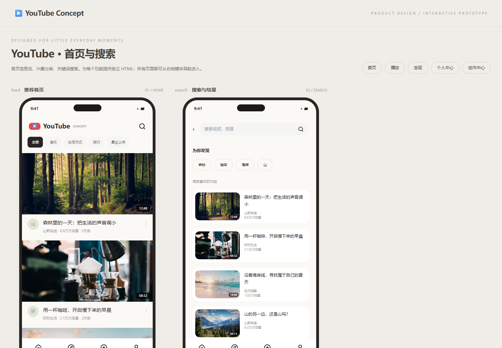

YouTube UI 模块 · 自主设计版
本轮设计授权
允许你理解输入的需求，针对需求进行优化，按照你理解的更好的设计，进行具体的开发实现。
本轮标记为 自主设计版 / design-enhanced。原任务使用 v1，正文未改写。完整输入见 prompt.md，结构化授权与设计记录见 design-scope.json。不能与未包含授权的旧实验标记为原始输入一致。
设计决策
把未指定的 APP 需求结合主题解释为视频产品；完成首页、播放、发现、个人中心、创作中心五个功能文件，逐模块展示独立手机界面。
执行条件
用户指定 gpt-6.1-sol，xhigh；在当前 Codex 会话直接执行，无子代理、无人工代码修改。同一会话连续完成多个主题，未保存全部系统上下文，不声明独立会话或公平性能比较。日期：2026-10-09。
运行与验证
用浏览器直接打开 index.html，或从仓库静态服务器进入。此案例包含外部 CDN/素材/模型，相关功能需要联网。
需求解释与实现边界
任务正文未提供具体 APP 名称，依据主题 youtube-ui 设计视频产品。批量执行授权覆盖逐模块请求继续的旧交互要求，一次完成五模块。当前环境无可调用 Artifacts 插件，以本地浏览器预览替代。
首次产物与验证证据
- 首次源码快照 · 快照 SHA-256。快照在浏览器校验前保存，含当时源码、输入和元数据，不包含依赖或中间 dist。
- 桌面截图 · 390px 截图 · 验证明细。
- 本案例 5 项关键功能检查通过，5 个登记入口在根路径、Pages 子路径与 390px 布局中通过。直接打开检查见验证明细。
- 全仓维护检查：generate、validate、npm test（11/11）、node --check index.js、test:browser（12/12）、git diff --check。


已知边界
- 交互原型使用示例内容；需要 CDN/Unsplash 网络。无真实账号、AI 后端或发布服务器。
预览截图

<!-- archive:start -->
当前归档信息（自动生成）
- 实验 ID：
youtube-ui--gpt-6-1-sol-xhigh-r01 - 模型：GPT-6.1 Sol；推理档位：xhigh
- 执行模式：自主设计授权；授权原文：允许你理解输入的需求，针对需求进行优化，按照你理解的更好的设计，进行具体的开发实现。
- 类型：prototype；预览：static；网络：required
- 完整原始输入快照 · 主题与其他版本
- 输入记录：保存本轮用户原文与所选任务正文；允许理解并优化需求和设计，区别于原文严格执行轮次。当前会话连续执行，系统上下文未完整归档。
- 工具：Codex。用户指定 gpt-6.1-sol / xhigh；Windows / PowerShell，当前会话直接执行，无子代理。模型名称按用户声明记录，未调用独立模型 API 验证。使用同一会话完成全部参与主题，存在前序实现上下文。 浏览器验证使用 Chromium 145.0.7632.6；3D 最终验证使用 ANGLE SwiftShader 软件渲染。
- 运行方式：浏览器直接打开本目录入口；CDN/外部素材需要联网。
- 费用记录：OpenAI · ChatGPT Plus 订阅；单案例货币金额未记录。据用户说明，OpenAI 模型通过 ChatGPT Plus 订阅测试；全部案例完成后，五小时额度未耗尽。未提供单案例费用金额。
- 首页与搜索
- 播放与评论
- 发现与短视频
- 个人中心
- 创作中心
部署适配记录
- 本轮新增授权：允许理解输入需求、优化需求并按更好的设计实现；任务正文版本与 hash 保持原样。
- 把未指定的 APP 需求结合主题解释为视频产品；完成首页、播放、发现、个人中心、创作中心五个功能文件，逐模块展示独立手机界面。
- 本轮由模型直接生成，无人工代码修改；校验后的修复另行记录。
- 任务正文未提供具体 APP 名称，依据主题 youtube-ui 设计视频产品。批量执行授权覆盖逐模块请求继续的旧交互要求，一次完成五模块。当前环境无可调用 Artifacts 插件，以本地浏览器预览替代。 <!-- archive:end -->